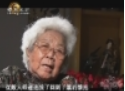
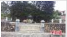

让延安精神迸发时代光芒
时间：2020-12-01 22:45:04 “五星红旗，你是我的骄傲，五星红旗，我为你自豪……”前不久，伴随着《红旗飘飘》激昂的旋律，天津市延安精神研究会为宝坻区黄庄镇小辛码头村建立的“延安精神宣传教育基地”挂牌、授旗。 “延安是中国革命的圣地，老一辈革命家和老一代共产党人，在延安时期培育形成的延安精神是我们党的宝贵精神财富。9月19日，习近平总书记向中国延安精神研究会第六次会员大会发去贺信，让我们备受鼓舞，倍感振奋。”授旗仪式后，天津市延安精神研究会常务副会长祝宝钟说，“我们要认真学习、落实贺信精神，深入学习贯彻五中全会精神，将延安精神作为弘扬党和人民在各个历史时期奋斗中形成的伟大精神和学习‘四史’的重要内容，通过多种形式研究、宣传、践行延安精神，用延安精神滋养初心，淬炼灵魂，为建设社会主义现代化国家汇聚强大的精神力量。” 天津市延安精神研究会宣讲团副团长谷梅，是中国共产党第七次代表大会正式代表谷云亭的女儿，多年来，她不断挖掘整理父母口述内容，通过一个个令人感动的红色故事，宣传践行延安精神，不断传承红色基因。“我的父母亲在延安时亲眼目睹毛泽东同志种菜，周恩来同志纺线，延安精神培育了一代代共产党人，是我们党的宝贵精神财富。我们要不断汲取信仰的力量，让延安精神迸发出时代的光芒。”谷梅在小辛码头村宣讲现场动情地说。 “有典型引路，延安精神一定会在新时代大放异彩。”小辛码头村党支部书记徐江说，“我们村党支部特别注重和加强村民和青少年传承红色基因的教育和引导，市延安精神研究会在这里挂牌、授旗，是对村党支部带领群众在脱贫致富奔小康的道路上，不忘初心、牢记使命、传承红色基因的认可和鼓励，更是在全市进一步开展弘扬延安精神活动的具体体现。” 除小辛码头村外，市延安精神研究会已经陆续为西青区第六埠村、保税区消防救援支队延安精神宣传教育基地挂牌。今后，还将指导更多具备条件的单位或乡村建立基地。 “宣传延安精神，是我们的职责所在。”天津市延安精神研究会副会长王雄介绍，研究会开展延安精神“进校园、进社区、进机关、进企业、进军营、进乡村”活动，目前，已经在全市所有高校、部分中小学以及一些基层和乡村分别建立了120个延安精神研究会、研究小组和宣传教育基地，广泛开展学习宣传活动，今后，还将更深入地研究延安精神、更有力地宣传延安精神、更自觉地践行延安精神，围绕全市发展大局，努力工作，开创弘扬延安精神的新局面。（记者 李国惠）
时间：2020-12-01 22:45:04 作者：网络转载
图文推荐
-
一百周年系列座谈会在北京龙心苑举行
图文推荐2019-12-11 16:42:31
-
 特稿：缅怀革命先驱，我们追寻1600公...
特稿：缅怀革命先驱，我们追寻1600公...
图文推荐2019-12-11 16:45:29
-
 特稿：《寻找父亲：刘光典烈士的红...
特稿：《寻找父亲：刘光典烈士的红...
图文推荐2019-12-11 16:45:29
-
 李亮亮的红色教育激情演讲,阐述红色..
李亮亮的红色教育激情演讲,阐述红色..
图文推荐2015-02-09 18:35:57
-

文小姐 武将军（上）[我的中国心]
图文推荐2015-02-10 09:49:35>
-

义务守护廖仲恺纪念碑66年 老人有了接班人
图文推荐2016-04-06 09:39:55
-
老班长的红色收藏,居然有这么多...
图文推荐2015-02-09 17:37:04
点击排行